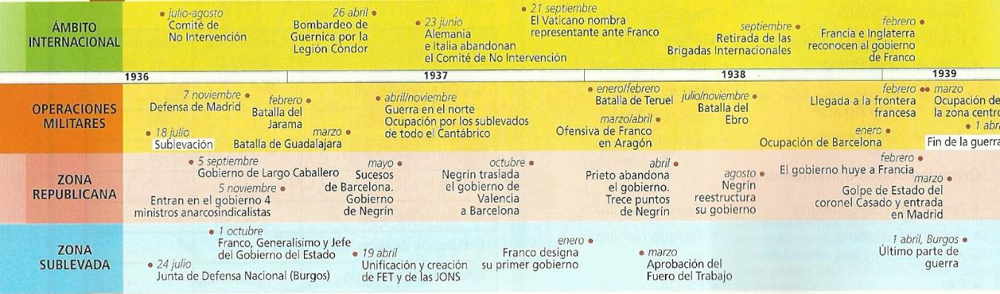
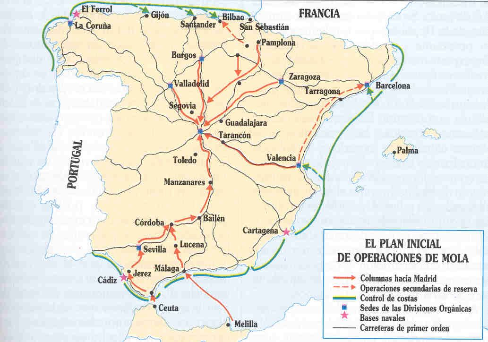
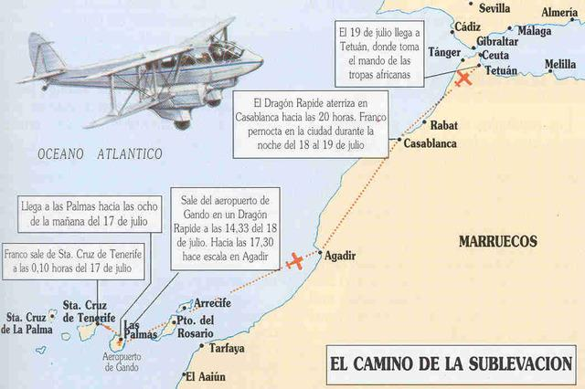
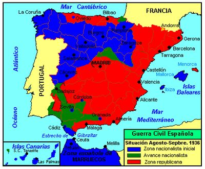
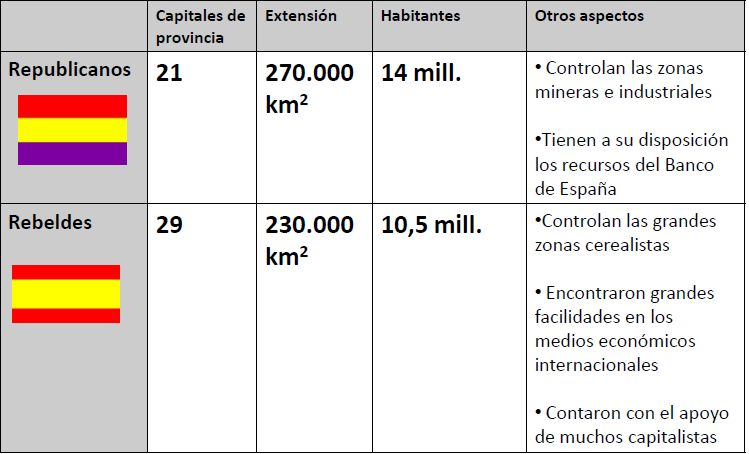
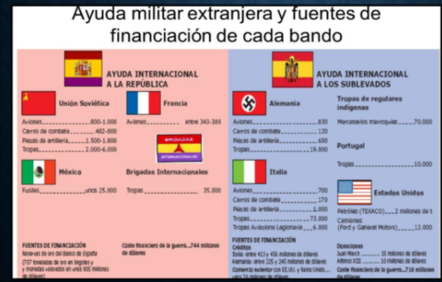
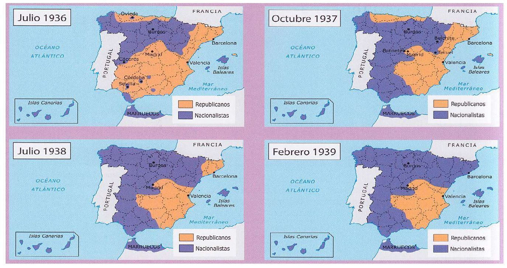
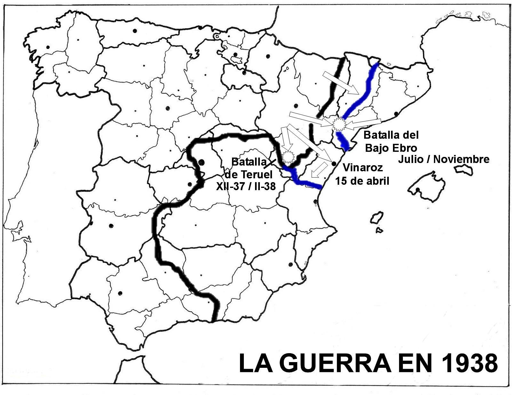
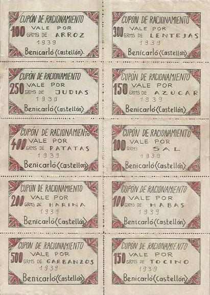

Tema 2: La Guerra Civil Española (1936 - 1939)
La fractura del territorio, las políticas en la retaguardia de ambos bandos, la dimensión internacional y el desarrollo bélico de un conflicto devastador.

Eje cronológico que enmarca la evolución militar y los principales hitos gubernamentales del conflicto1. El Estallido del Conflicto y la División de España
El pronunciamiento militar contra la Segunda República se inició el 17 de julio de 1936 en el norte de África, de la mano del general Francisco Franco*, quien voló desde Canarias a Tetuán a bordo del histórico aeroplano británico Dragon Rapide para ponerse al mando del curtido y letal Ejército de África. El alzamiento se generalizó en la Península los días 18 y 19 de julio bajo la dirección y plan preestablecido del general Emilio Mola, "El Director". El plan consistía en un golpe rápido y en extremo violento que convergería con columnas directas hacia Madrid.

Esquema táctico del plan original de avance militar convergente diseñado por Emilio Mola
Trayecto de vuelo y escalas realizadas por Francisco Franco desde Canarias hasta MarruecosSin embargo, el golpe militar fracasó parcialmente al chocar con una encarnizada e imprevista resistencia popular. Mientras el alzamiento triunfó en el interior rural, Galicia, Castilla y León, Navarra, Zaragoza, Sevilla y la franja occidental andaluza, fue derrotado gracias a la activa y coordinada respuesta de las milicias populares de la CNT y la UGT y de las fuerzas de seguridad fieles a la República (Guardia de Asalto y Guardia Civil) en los grandes núcleos urbanos e industriales como Barcelona, Madrid, Valencia, Asturias y la cornisa cantábrica.
El fracaso parcial en el rápido asalto militar dividió de forma drástica e inmediata el territorio de España en dos zonas, abriendo el camino hacia una devastadora e irreversible guerra civil:
- El bando sublevado o "nacionales": Dominaban unos 10,5 millones de habitantes y las principales zonas cerealistas del país. Contaban con el pilar de unificación militar del general Franco, las tropas profesionales de África y el respaldo inicial de terratenientes, aristócratas, burguesía conservadora y clero católico.
- El bando republicano o "leales": Controlaban unos 14 millones de habitantes, las principales ciudades industriales, las cuencas mineras y los recursos financieros y reservas de oro del Banco de España. Su base social se fundamentaba en las clases populares de obreros, jornaleros, empleados y pequeña burguesía.
¿Quieres conocer el ambiente militar y la inmediata reacción institucional que se emitió por radio las horas posteriores al golpe de 1936?
🎬 Vídeo complementario: El estallido de la contienda y el fracaso del golpe militar ➡️2. Las Dos Españas: Retaguardia y Políticas de Guerra
El desarrollo de la vida social y política en la retaguardia de ambos bandos evidenció dos modelos organizativos completamente opuestos:

Mapa de la división inicial del territorio español pocas semanas después de consolidarse el golpe militar
Cuadro sinóptico de la población, recursos y efectivos militares de cada bando al estallar la guerraA. La Zona Republicana: Revolución, Fragmentación y Sucesos de Mayo
En el bando republicano, la insurrección militar provocó el colapso inicial del aparato del Estado. Surgieron múltiples juntas y comités revolucionarios populares locales formados por sindicatos (CNT y UGT) y partidos de izquierda que asumieron el verdadero poder de forma autónoma. Se desencadenó una profunda revolución social: se confiscaron y colectivizaron fábricas, empresas de transporte y grandes fincas agrarias (especialmente en Cataluña y Levante).
La retaguardia republicana adoleció de una insalvable fragmentación política entre dos corrientes:
- Los partidarios de ganar la guerra primero: Liderados por el presidente del Gobierno, el republicano Juan Negrín, el PSOE moderado de Indalecio Prieto y el Partido Comunista (PCE). Defendían fortalecer al Estado, someter a los sindicatos y disciplinar a las milicias integrándolas en el nuevo Ejército Popular de forma regular con mandos profesionales.
- Los partidarios de priorizar la revolución social: Liderados por los anarquistas de la CNT-FAI y los trotskistas del POUM (Partido Obrero de Unificación Marxista) con Andreu Nin a la cabeza, defendían que la revolución agraria e industrial era el único motor que daría la victoria definitiva sobre el fascismo.
Estas tensiones desembocaron en el sangriento enfrentamiento armado de los Sucesos de Mayo (1937) en Barcelona entre comunistas y fuerzas estatales frente a anarquistas y el POUM, que se saldó con la derrota de estos últimos y la posterior detención, tortura y asesinato de Andreu Nin por agentes estalinistas.
¿Deseas analizar cómo se organizó el Ejército de la República y la evolución interna del Gobierno tras el traslado de su capital?
B. La Zona Sublevada: Mando Único, Disciplina y Totalitarismo
A diferencia del caos republicano, el bando nacionalista organizó de inmediato una estructura de mando centralizada y disciplinada. En septiembre de 1936, los principales mandos militares reunidos en Salamanca nombraron al general Francisco Franco como Generalísimo de todos los ejércitos en el frente y Jefe del Gobierno del Estado con plenos poderes políticos y civiles.
Franco procedió a la liquidación de cualquier corriente discordante mediante el Decreto de Unificación de abril de 1937, que obligó a fusionar a todas las fuerzas sublevadas (falangistas, carlistas o requetés y monárquicos) bajo un partido único de carácter totalitario y fascista: Falange Española Tradicionalista y de las JONS (FET y de las JONS), asumiendo él mismo la Jefatura Nacional del Movimiento.
El nuevo Estado derogó de inmediato todas las reformas agrarias, educativas y laicas de la República, ilegalizó las huelgas y los sindicatos obreros tradicionales y restauró los privilegios corporativos e históricos del clero católico, que bendijo solemnemente el levantamiento militar legitimándolo como una "Santa Cruzada contra el comunismo ateo".
3. La Dimensión Internacional de la Guerra
El estallido de la guerra civil en España despertó un inmenso interés y polarización en la opinión pública internacional. El conflicto fue visto como un "microcosmos" donde se libraba el primer asalto armado de la batalla ideológica mundial entre el fascismo, la democracia y el comunismo soviético.

Esquema didáctico detallado que resume las tropas, armamentos, divisas y fuentes de financiación de cada bandoAnte la amenaza de que el conflicto se propagase por todo el continente europeo, los gobiernos democráticos de Francia y Gran Bretaña impulsaron el Comité de No Intervención (1936), al que se adhirieron 27 naciones, prohibiendo la venta de armas y suministros a los beligerantes españoles. Sin embargo, este acuerdo se convirtió pronto en papel mojado y perjudicó de forma asimétrica a la República, al tiempo que fue violado de manera sistemática por las potencias fascistas y la URSS:
- El bando sublevado recibió la ayuda decisiva del Eje: La Alemania nazi de Hitler suministró la letal aviación de la Legión Cóndor (responsable del bombardeo de Guernica), carros de combate e instructores militares; la Italia fascista de Mussolini aportó blindados y un cuerpo de ejército completo de 73.000 soldados regulares (el CTV - Corpo Truppe Volontarie); y la dictadura de Salazar en Portugal colaboró con el envío de miles de combatientes voluntarios (los Viriatos) y puso sus puertos estratégicos de inmediato a disposición de los rebeldes.
- La República recurrió al soporte de la Unión Soviética y México: Al verse marginada por las potencias occidentales, el Gobierno de la República adquirió armamento, combustible, aviones de caza e instructores soviéticos de Stalin, teniendo que pagar la ayuda de contado mediante el depósito en Moscú de las reservas de oro del Banco de España (el controvertido "oro de Moscú"). Asimismo, México suministró de forma desinteresada fusiles y alimentos a la causa republicana.
La ayuda humana al bando republicano provino del movimiento de solidaridad antifascista mundial mediante las Brigadas Internacionales: unos 40.000 combatientes voluntarios procedentes de 30 países (obreros, intelectuales, parados, aventureros de ideología comunista o socialista) que tuvieron un papel militar decisivo en la heroica defensa de Madrid a finales de 1936.
¿Quieres profundizar en cómo influyó la llegada de las potencias fascistas y de las Brigadas Internacionales en la prolongación de la guerra?
🎬 Vídeo complementario: La internacionalización de la guerra civil en España ➡️4. Las Fases Militares de la Guerra Civil (1936 - 1939)
La contienda armada se desarrolló a lo largo de cuatro fases militares bien diferenciadas, caracterizadas por el paso progresivo de un golpe rápido fallido a una cruenta y larga guerra de desgaste de posiciones:

Evolución territorial y frentes de combate divididos en cuatro periodos bélicos entre julio de 1936 y febrero de 1939A. Fase 1: El Avance hacia Madrid (julio de 1936 - marzo de 1937)
Tras cruzar el estrecho de Gibraltar con el apoyo aéreo italo-alemán, las columnas legionarias de Franco avanzaron de forma implacable hacia el norte por Extremadura, enlazando las dos zonas sublevadas. Conquistaron Toledo y se lanzaron al asalto directo de Madrid. Ante la ofensiva, el Gobierno republicano huyó a Valencia, delegando la resistencia en la Junta de Defensa del general Miaja y el comandante Vicente Rojo. Gracias a las milicias populares, la llegada de las Brigadas Internacionales y los tanques soviéticos, Madrid resistió heroicamente bajo el grito de "¡No pasarán!".
Los posteriores esfuerzos franquistas por cercar y aislar la capital fracasaron de forma consecutiva en las batallas del Jarama (febrero de 1937) y de Guadalajara (marzo de 1937), donde los voluntarios de las brigadas y las tropas de la República aplastaron de forma resonante a las divisiones italianas del CTV.
B. Fase 2: La Campaña del Norte y la Guerra de Desgaste (abril - octubre de 1937)
Ante la resistencia de Madrid, Franco adoptó un drástico cambio de estrategia militar: concentrar el ataque en la cornisa cantábrica (Vizcaya, Santander y Asturias) para apoderarse de sus recursos minerales, industriales y siderúrgicos y aliviar la presión de las tropas de Navarra y San Sebastián. A pesar de los desesperados contraataques de distracción de la República en las batallas de Brunete (Madrid) y Belchite (Zaragoza), las tropas franquistas rompieron el "cinturón de hierro" de Bilbao en junio, conquistaron Santander en agosto y consumaron la caída de Asturias en octubre de 1937.
El acontecimiento más doloroso y célebre de esta fase fue el bombardeo de la villa histórica de Guernica el 26 de abril de 1937, inmortalizado por Pablo Picasso.
C. Fase 3: La Ofensiva del Este y la Batalla del Ebro (diciembre de 1937 - noviembre de 1938)
Con el control de los recursos industriales del norte, Franco desplazó las tropas hacia el este. Tras un brevísimo y durísimo triunfo táctico de la República en la batalla de Teruel (tomada bajo temperaturas polares extremas a finales de 1937 y reconquistada por Franco en febrero de 1938), el bando sublevado lanzó una ofensiva masiva a lo largo de Aragón y Castellón, alcanzando el Mediterráneo por Vinaroz el 15 de abril de 1938. Este avance estratégico partió en dos la zona republicana, aislando Cataluña de Valencia y Madrid.

Situación de los frentes de batalla en el verano de 1938, reflejando el aislamiento territorial catalán respecto a Madrid y LevantePara evitar el desmoronamiento final, el general republicano Vicente Rojo planificó una audaz e imprevista ofensiva cruzando el cauce del río: la célebre y mortífera Batalla del Ebro (julio - noviembre de 1938). Fue el enfrentamiento bélico más largo, masivo y sangriento de la historia de nuestro país. El Ejército de la República cruzó el río y sorprendió a los sublevados, pero tras seis meses de una encarnizada batalla de desgaste ante el arrollador apoyo de la aviación del Eje, las tropas republicanas sufrieron un descalabro absoluto, quedando su ejército destruido.
D. Fase 4: El Colapso de la República y el Fin de la Guerra (enero - abril de 1939)
Tras liquidar al Ejército del Ebro, Franco inició la ofensiva final sobre Cataluña. Barcelona cayó sin resistencia en enero de 1939, desatando un colosal y dramático éxodo de refugiados hacia la frontera francesa. El Gobierno republicano de Juan Negrín regresó a la zona centro de Madrid y Levante proponiendo continuar la resistencia armada para enlazar con el inminente estallido de la Segunda Guerra Mundial en Europa, pero el descontento interno era insalvable.
En marzo de 1939, el coronel Segismundo Casado protagonizó un golpe de Estado dentro de Madrid contra el Gobierno de Negrín, buscando negociar una paz sin represalias con Franco. El dictador rechazó en rotundo cualquier acuerdo e impuso la rendición incondicional. Las tropas franquistas entraron en Madrid el 28 de marzo sin resistencia, y el 1 de abril de 1939 se firmó el último parte de guerra oficial decretando el fin del conflicto.
5. Las Consecuencias y las Heridas Abiertas de la Posguerra
El fin de la guerra civil inauguró un prolongado y doloroso periodo de posguerra marcado por la implantación de la dictadura del general Franco (1939-1975) y la consagración de una sociedad rígidamente dividida entre vencedores y vencidos. Sus principales consecuencias de nivel EBAU fueron:

Cartilla de racionamiento oficial distribuida por la Comisaría General de Abastecimientos del nuevo Estado- Demográficas: Se calcula que las pérdidas demográficas directas rondaron las 500.000 personas, sumando bajas de frentes (145.000), represión en la retaguardia de ambos bandos (135.000), bombardeos, ejecuciones de la posguerra (entre 35.000 y 50.000) y un colosal éxodo de refugiados exiliados que superó los 400.000 españoles hacia Francia e Hispanoamérica.
- Económicas: Destrucción de más de 250.000 viviendas, colapso de las infraestructuras de transporte (puentes, vías férreas, carreteras), pérdida total de las reservas de oro del Banco de España, y caída del 25% en la producción agrícola y del 30% en la industrial. La escasez de recursos obligó a imponer la cartilla de racionamiento para todos los alimentos y bienes de primera necesidad, prolongándose el racionamiento de pan hasta el año 1952. España no recuperaría los niveles de renta per cápita de 1936 hasta la década de 1950.
- Sociales y Laborales: Anulación total de todas las conquistas y derechos sociales logrados por la Segunda República (divorcio, matrimonio civil, laicismo escolar, libertades sindicales). Más de 250.000 presos políticos ingresaron en cárceles y campos de concentración para realizar trabajos forzosos de reconstrucción nacional.
- La Quiebra Cultural: Destrucción irreversible de lo que se conoció como la Edad de Plata de la cultura de nuestro país. Científicos, pensadores, poetas e investigadores de primera categoría sufrieron el fusilamiento directo (como Federico García Lorca en Granada), la muerte en las cárceles de posguerra (como el poeta Miguel Hernández) o la amargura de un penoso exilio sin retorno (como Antonio Machado, Juan Ramón Jiménez, Rafael Alberti, Claudio Sánchez Albornoz o el violonchelista Pau Casals).
- Políticas y Morales: La monarquía parlamentaria quedó sepultada bajo una dictadura militar autoritaria basada exclusivamente en la legitimación bélica del golpe. El nuevo régimen nunca buscó la amnistía o reconciliación de los españoles, sino la glorificación sistemática de la "Victoria" y la persecución implacable de los derrotados.
¿Quieres analizar el impacto humano de la represión militar, el internamiento en los campos de concentración y el exilio de la posguerra?
🎬 Vídeo complementario: Las consecuencias de la Guerra Civil y el exilio republicano ➡️